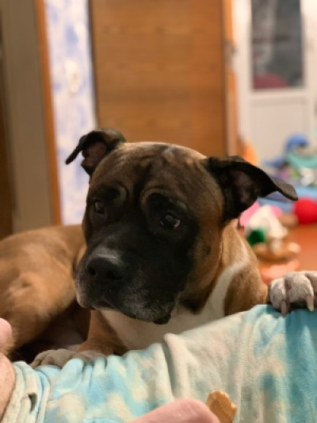

У нас дома живут собака породы Американский стаффордширский терьер по кличке Арчи и шиншилла Топтыжка:
С 2008 года работаю в рекламе, на производстве.
С 2019 года являюсь сотрудником компании "Фасад и Интерьер" на должности оператора печати и 3D принтера.
Сейчас нахожусь в отпуске по уходу за ребёнком.
На данный момент мною пройдены следующие темы:
С рядом домашних работ можно ознакомиться на моём Гитхабе.